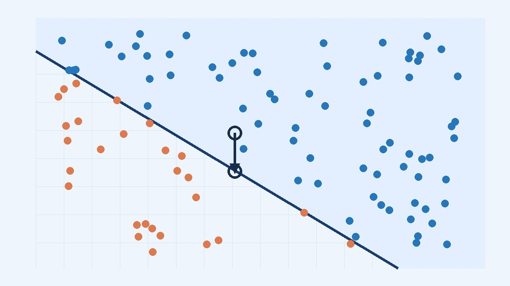

Ви — дослідник надійності алгоритмів. Усі експерименти виконуються локально на навчальних моделях, без атак на чужі системи.
Коротка теорія

Класифікатор перетворює ознаки x на оцінку s=w·x+b. У бінарній лінійній моделі знак оцінки визначає клас. Навчання підбирає ваги за прикладами. Цілеспрямоване збурення — зміна вхідних даних, обрана для зміни рішення моделі. Воно не обов’язково непомітне людині. Відстань L₀ — кількість змінених компонентів, L₂ — евклідова норма зміни. Стійкість залежить від моделі, даних та дозволених змін.
01. Перетнути невидиму межу
Модель відносить об’єкт до A, якщо 2x+y−10 ≥ 0, і до B інакше. Початкова точка (4; 1). Знайдіть найближчу точку межі. Спочатку спрогнозуйте напрямок зміни, потім натисніть на графік. Порівняйте зміну лише x, лише y та обох ознак.
02. Один піксель проти моделі
Модель навчена відрізняти вертикальні та горизонтальні смуги 8×8. Вона використовує 64 двійкові ознаки. Змініть якомога менше клітин, щоб змінити прогноз, зберігаючи початковий образ наскільки можливо. Порівняйте випадковий і цілеспрямований вибір клітин.
03. Випадковість чи цілеспрямована зміна?
Проведіть по 100 випробувань на нових синтетичних прикладах для 1, 3, 5, 8 змін. Обидва методи мають однаковий бюджет L₀. Порівняйте частку змінених правильних початкових прогнозів. Дані для тесту не входять у навчальний набір.
| Бюджет | Випадкові зміни | Цілеспрямовані | Початкова точність |
|---|
04. Навчити модель сумніватися
Запропонуйте правило: якщо |s| менше порога, модель відмовляється від рішення. Перевірте пороги 0, 2, 5 та 10 на однаковому тестовому наборі зі збуренням 5 клітин. Відмова не є правильною класифікацією. Знайдіть компроміс між часткою прийнятих рішень і часткою помилок серед них.
| Поріг | Прийнято | Помилки серед прийнятих |
|---|
Наука навколо Вас
Скористайтеся розпізнаванням тексту у власному смартфоні (наприклад, камерою з OCR або Google Lens). Напишіть на папері слово «НАУКА», зробіть три знімки: за рівного освітлення, під кутом, із частковим перекриттям однієї літери. Запишіть результат. Не фотографуйте приватні дані. Якщо застосунок недоступний, порівняйте результати лабораторії при випадкових змінах та цілеспрямованих.
Зміна освітлення та ракурсу — природне збурення, а не доказ змагальної атаки. Для такого висновку потрібно визначити мету та спосіб вибору зміни.
Наукова цікавинка
У 2014 році дослідники показали, що спеціально обрані зміни входів можуть спричиняти помилки нейронних мереж. У нашій лабораторії використано значно простішу лінійну модель: результати не можна автоматично переносити на сучасні нейромережі.
Джерела для поглиблення
Goodfellow та ін. Explaining and Harnessing Adversarial Examples
NIST: Adversarial Machine Learning
Ваш висновок
У діалозі друку оберіть «Зберегти як PDF». Текстові відповіді зберігаються локально, якщо браузер дозволяє.
Ваше майбутнє у ФТІ
Дослідження стійкості моделей, математичне моделювання та захист систем ШІ — завдання фахівців з прикладної математики й кібербезпеки.
ФТІ КПІ · ФТІ школа